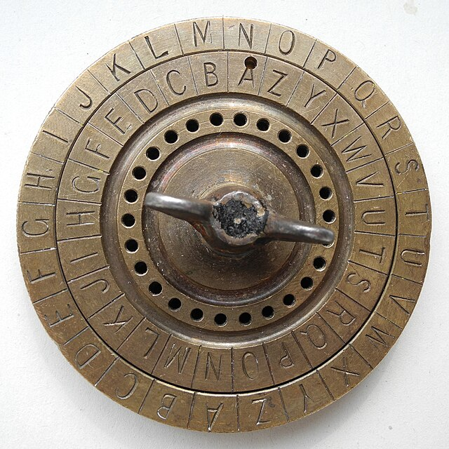

Caesar Cipher
"The simplest cipher — and the most famous failure in history."
Why This Matters
The earliest documented shift cipher and the conceptual ancestor of every shift-based encryption scheme that followed. It introduced the fundamental idea that a message can be systematically transformed by a secret rule.

Julius Caesar used this cipher to communicate with his generals during the Gallic Wars. Suetonius records it in The Twelve Caesars (c. 121 AD): "If he had anything confidential to say, he wrote it in cipher, that is, by so changing the order of the letters of the alphabet, that not a word could be made out."
Caesar typically used a shift of 3. His great-nephew Augustus preferred a shift of 1. The cipher offered minimal protection — most of Caesar's enemies were illiterate, so even an unencrypted Latin message was safe from most interceptors.
ROT13 — the modern variant — applies a shift of 13. Because 13+13=26, ROT13 is its own inverse: applying it twice returns the original text. It's still used in online forums to hide spoilers.
Each letter is replaced by the letter a fixed number of positions down the alphabet. The shift wraps around using modular arithmetic:
Encrypt: C = (P + shift) mod 26 Decrypt: P = (C − shift + 26) mod 26 Example (shift = 3): A → D N → Q B → E O → R Z → C (wrap-around)
Encryption steps:
- Convert each plaintext letter to a number (A=0, B=1 … Z=25)
- Add the shift value and take modulo 26
- Convert the result back to a letter
- Non-alphabetic characters (spaces, punctuation) pass through unchanged
Shift Diagram (shift = 3)
In any English text, E appears ~12.7%, T ~9.1%, A ~8.2%. Because the Caesar cipher maps each letter to exactly one other letter, these frequencies are preserved in the ciphertext — just shifted. Find the most common ciphertext letter, assume it encrypts E, and the shift is revealed.
The entire keyspace is just 25 shifts. A human can test all 25 by hand in minutes. A computer does it in microseconds. This is the simplest form of exhaustive key search — a technique that scales to modern ciphers but requires vastly more computation.
Why it fails fundamentally: The Caesar cipher has only 25 possible keys. Modern encryption (AES-256) has 2²⁵⁶ ≈ 10⁷⁷ possible keys — more than atoms in the observable universe. Keyspace size is the first lesson of cryptographic security.
| Caesar Concept | Evolved Into |
|---|---|
| Letter substitution | Non-linear S-boxes in AES — designed to resist frequency analysis |
| Shift = key | Symmetric key concept — both parties share a secret parameter |
| 25-key space | AES-256 requires 2²⁵⁶ key trials — computationally infeasible |
| Frequency leak | Diffusion principle — modern ciphers ensure every output bit depends on every input bit |
Shannon's confusion: Claude Shannon (1949) defined "confusion" as making the relationship between key and ciphertext as complex as possible. Caesar has zero confusion — the relationship is simply C = P + 3. AES's S-boxes are specifically designed to maximize confusion.
The Disney series Gravity Falls popularized a generation of Caesar-solvers by hiding end-credit clues in simple shifts and layered substitutions. It is a modern example of why classical ciphers remain pedagogically powerful: fast to learn, satisfying to break, and instantly reusable in storytelling.
Paste any ciphertext to see letter frequencies. Gold bars reveal the pattern — find the tallest bar to guess the shift.
Paste any Caesar ciphertext. The tool tries all 25 shifts and ranks each candidate by how close its letter frequencies are to standard English (chi-squared distance — lower is better).
Press Break Cipher to score all 25 candidate decryptions and rank them by English-likelihood.
What you just witnessed. This is the cryptanalytic technique that broke Caesar ciphers in practice. Because there are only 25 possible shifts, an attacker can simply try all of them and pick the one whose letter frequencies look most like real English. The chi-squared score above measures exactly that distance: the winning row is the candidate whose letter distribution is closest to E 12.7%, T 9.1%, A 8.2%, and so on. This is why short keyspaces are fatal in cryptography — and why every modern cipher has a key space astronomically larger than 25. AES-256 has 2²⁵⁶ keys, more than the number of atoms in the observable universe.
Can you find the shift?